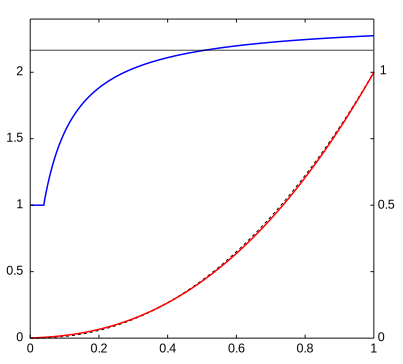
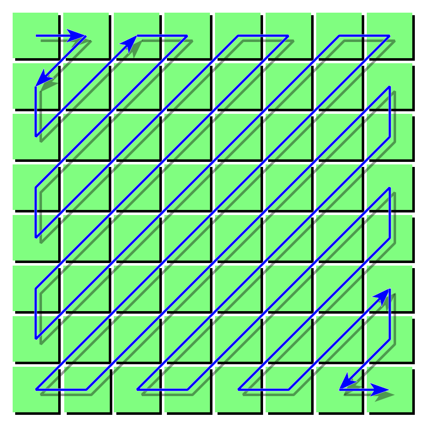
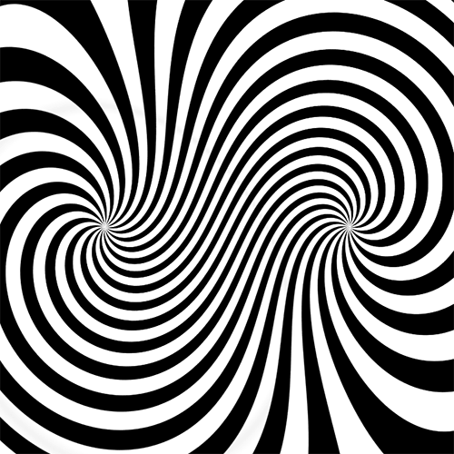
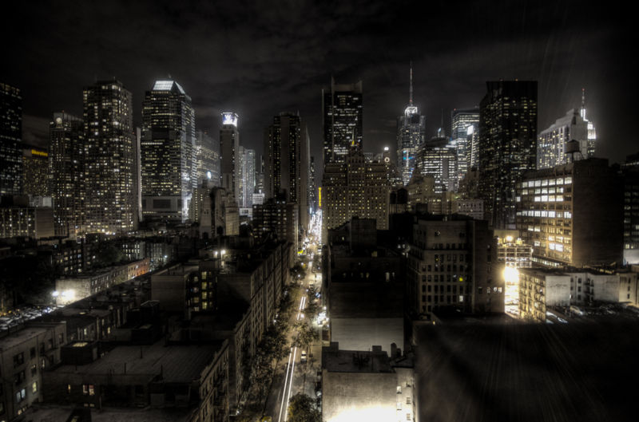

Souborové formáty
Kurz počítačové grafiky
Autor: Jiří Hnídek / jiri.hnidek@tul.cz
Vzorkování a kvantizace
- Převod ze spojitého signálu na digitální
-
Příkladem je digitální fotoaparát:
- Vzorkování: 'spojitý' proud fotonů je zachytáván na 'mřížce' CCD čipu
- Kvantizace: 'spojité' hodnoty intenzity jednotlivých pixelech převáděny na konečný počet úrovní
Pixel
Zkratka picture element je jednak označení pro jeden bod rastrového obrázku a druhak je to jeden svítící bod na monitoru.
Jsou pixel na obrazovce a v rastrovém obrazu totožné?
Ne nutně. Je důležité si uvědomit, že jeden pixel na monitoru může vzniknout z více/méně pixelů rastrového obrázku.
Rozlišení
U tiskáren udáváno v jednotce DPI (dots per inch) a u monitorů v jednotce PPI (pixels per inch).
Je informace o rozlišení součástí souborů s rastrovým obrázkem?
Nikoliv. Mějte na paměti, že tento údaj má smysl udávat pouze u technických zařízení jako jsou tiskárny, kopírky, apod. Může se ovšem objevit v tzv. meta datech obrázků, které vznikly naskenováním.
Dynamický rozsah
Udává počet úrovní, který má jeden barevný kanál a je určen počtem bitů, který slouží pro uložení jednoho barevného kanálu.
Některé příklady ze života
- 1 bit: 2 úrovně (tzv. bitmapa)
- 8 bitů: 256 úrovní (úrovně šedi nebo barevná paleta)
- 12 bitů: 4096 úrovní (některé lepší digitální zrcadlovky)
- 16 bitů: 65 536 úrovní nebo half-float
- 32 bitů: float
Uložení barvy pomocí (s)RGB
K uložení barvy se musí použít nějaký konkrétní barevný prostor. Nejčastěji se používá barevný prostor sRGB. Méně často Adobe RGB.
Převod z XYZ do RGB lineární
$$ \begin{bmatrix} R_\mathrm{linear}\\G_\mathrm{linear}\\B_\mathrm{linear}\end{bmatrix}= \begin{bmatrix} 3.2406&-1.5372&-0.4986\\ -0.9689&1.8758&0.0415\\ 0.0557&-0.2040&1.0570 \end{bmatrix} \begin{bmatrix} X \\ Y \\ Z \end{bmatrix} $$
RGB lineární
Výsledkem předchozího převodu jsou tzv. RGB lineární hodnoty, které jsou v rozsahu $ <0, 1> $
Hodnoty RGB lineární se používají při interním zpracování v počítači, ale pro uložení je často vhodné provést gamma korekci.
Gamma korekce
Používá se především z toho důvodu, že naše vnímání intenzity světla je značně nelineární.
$$ V_{out} = A V_{in}^{\gamma} $$
Gamma korekcí tudíž efektivně využíváme daný dynamický rozsah daného kanálu (8/16 bitů na kanál).
Převod z RGB lineární do sRGB (gamma korekce).
Pokud za C dosadíme jednotlivé barvy z RGB lineární, pak pro převod do sRGB platí vztah:
$$ C_\mathrm{srgb}=\begin{cases} 12.92C_\mathrm{linear}, & C_\mathrm{linear} \le 0.0031308\\ (1+a)C_\mathrm{linear}^{1/2.4}-a, & C_\mathrm{linear} > 0.0031308 \end{cases} $$
, kde $ a = 0,055 $
Převod z sRGB do RGB lineární
$$ C_\mathrm{linear}= \begin{cases}\frac{C_\mathrm{srgb}}{12.92}, & C_\mathrm{srgb}\le0.04045\\ \left(\frac{C_\mathrm{srgb}+a}{1+a}\right)^{2.4}, & C_\mathrm{srgb}>0.04045 \end{cases} $$
Převodní funkce (gamma korekce)
Gamut sRGB

Alfa kanál
Určuje průhlednost každého pixelu. Konvence je taková, že hodnota 0 reprezentuje úplně průhledný pixel a maximální hodnota rozsahu (např.: 1.0 nebo 255) úplně neprůhledný pixel.
Barevná paleta
Některé souborové formáty umožňují vyjádřit barvu pixelu nikoliv přímo pomocí barvy, ale pomocí indexu do barevné palety.
Paleta bývá nejčastěji adaptivní (obsahuje maximum barev z původního obrázku).
Komprese obrazové informace
Rastrové obrázky mohou být skutečně velké. Z toho důvodu se pro jejich uložení používá jak bezeztrátová tak i ztrátová komprese.
Bezeztrátová komprese
- RLE kódování
- Huffmanovo kódování
- LZW kódování
- DEFLATE
Ztrátová komprese
Využívá nedokonalosti lidského oka, kdy je možné některé informace vypustit aniž bychom to poznali.
- Vyšší citlivost na změnu jasu než na změnu barvy
- Neschopnost rozlišit změny ve vysokofrekvenčním signálu
JPEG komprese
Jedná se o ztrátový kompresní formát, který je používan nejen v obrázcích z příponou .jpg/.jpeg (JFIF)
Nalezneme ho i v grafických formátech TIFF, PDF, PS, MOV, apod.
Je vhodná na komprimaci pouze některých obrázků: fotografií, naskenovaných dokumentů, které jsou ze své podstaty rozmazané.
Základní vlastnosti
- Vytvořeno koncem 80. let Joint Picture Expert Group
-
Je možné použít 4 režimy činnosti, ale běžně jsou podporovány jenom první dva
- Sekvenční
- Progresivní
- Bezeztrátový
- Hierarchický
Kroky sekvenčního režimu komprese
- Převod do barevného prostoru YCbCr
- Převzorkování (4:4:4, 4:2:2)
- Rozdělení obrázků do makrobloků
- Diskrétní kosinová transformace (DCT)
- Kvantizace pomocí kvantizační matice
- Linearizace (Zig-Zag)
- RLE kódování
- Huffmanovo (Aritmetické) kódování
Převod z RGB (lineární) do YCbCr
Pokud jsou vstupní hodnoty (RGB) v rozsahu $ <0, 255> $, tak převod může mít následující podobu a výstupní hodnoty (YCbCr) budou v rozsahu $<-127, 127>$
$$ \begin{bmatrix} Y \\ C_{b} \\ C_{r} \\ 1.0\end{bmatrix}= \begin{bmatrix} 0.299 & 0.587 & 0.114 & 0.0 \\ -0.1687 & 0.3313 & 0.5 & -128 \\ 0.5 &-0.4187 &-0.0813& -128 \\ 0.0 & 0.0 & 0.0 & 1.0 \\ \end{bmatrix} \begin{bmatrix} R \\ G \\ B \\ 1.0 \end{bmatrix} $$
Převzorkování
Jelikož je lidské oko více citlivé na změnu jasu než na změnu barvy, tak je možné vynechat některé barevné vzorky.
Jasová složka je vždy zachována. Barevné složky jsou průměrovány z 2x2 pixelů nebo 2x1 pixelů. Tím dochází k první ztrátě informace.
Čím je způsobena větší citlivost lidského oka na jas než na barvu?
Je to dáno počtem tyčinek (120 mil.) a čípků (8 mil.).
Rozdělení obrazu do makrobloků
Každý převzorkovaný barevný kanál je rozdělen do makrobloků 8x8.
Diskrétní kosinová transformace (DCT)
Nejde o ztrátovou operaci. Pouze dojde k jinému vyjádření diskétních hodnot.
Pro jednorozměrný případ má následující podobu:
$$ X_k = c_{k} \sum_{n=1}^{N-1} s(n) \cos \frac{\pi(2n + 1)k}{2N} \quad k = 0, \dots, N-1. $$ $$ c_{k} = \begin{cases} \sqrt{1/N}, k=0\\ \sqrt{2/N}, k>0 \end{cases} $$
Diskrétní kosinová transformace (DCT)
Pro dvourozměrný případ má následující podobu a N má v našem případě (JPEG) hodnotu 8:
$$ X_{(i,j)} = c_{(i,j)} \sum_{n=1}^{N-1}\sum_{m=1}^{N-1} s(m,n) \cos \frac{\pi(2m + 1)i}{2N} \cos \frac{\pi(2n + 1)j}{2N} $$ $$ c_{(i,j)} = c_{i} c_{j} $$
Kvantizace pomocí kvantizační matice
Výstupem DCT je transformovaný makroblok 8x8 jeho hodnoty jsou podělené kvantizační maticí (50% komprese):
$$ \begin{bmatrix} 16 & 11 & 10 & 16 & 24 & 40 & 51 & 61 \\ 12 & 12 & 14 & 19 & 26 & 58 & 60 & 55 \\ 14 & 13 & 16 & 24 & 40 & 57 & 69 & 56 \\ 14 & 17 & 22 & 29 & 51 & 87 & 80 & 62 \\ 18 & 22 & 37 & 56 & 68 & 109 & 103 & 77 \\ 24 & 35 & 55 & 64 & 81 & 104 & 113 & 92 \\ 49 & 64 & 78 & 87 & 103 & 121 & 120 & 101 \\ 72 & 92 & 95 & 98 & 112 & 100 & 103 & 99 \end{bmatrix} $$
Kvantizace a komprese
Během kvantizace dochází k největší ztrátě dat.
Kvantizační matice může být vynásobena koeficientem a tím můžeme jednak určit kvalitu komprese ale i míru ztráty obrazové informace.
Kvalita komprese se udává většinou v procentech.
Příklad kvantizace
Pokud následující makroblok 8x8 (výsledek DCT)
$$ \begin{bmatrix} -415 & -33 & -58 & 35 & 58 & -51 & -15 & -12 \\ 5 & -34 & 49 & 18 & 27 & 1 & -5 & 3 \\ -46 & 14 & 80 & -35 & -50 & 19 & 7 & -18 \\ -53 & 21 & 34 & -20 & 2 & 34 & 36 & 12 \\ 9 & -2 & 9 & -5 & -32 & -15 & 45 & 37 \\ -8 & 15 & -16 & 7 & -8 & 11 & 4 & 7 \\ 19 & -28 & -2 & -26 & -2 & 7 & -44 & -21 \\ 18 & 25 & -12 & -44 & 35 & 48 & -37 & -3 \end{bmatrix} $$
Podrobýme kvantizaci kvantizační maticí, tak dostaneme následující makroblok:
$$ \begin{bmatrix} -26 & -3 & -6 & 2 & 2 & -1 & 0 & 0 \\ 0 & -3 & 4 & 1 & 1 & 0 & 0 & 0 \\ -3 & 1 & 5 & -1 & -1 & 0 & 0 & 0 \\ -4 & 1 & 2 & -1 & 0 & 0 & 0 & 0 \\ 1 & 0 & 0 & 0 & 0 & 0 & 0 & 0 \\ 0 & 0 & 0 & 0 & 0 & 0 & 0 & 0 \\ 0 & 0 & 0 & 0 & 0 & 0 & 0 & 0 \\ 0 & 0 & 0 & 0 & 0 & 0 & 0 & 0 \end{bmatrix} $$
Linearizace
RLE kódování
Run Lenght Encoding bezeztrátově komprimuje opakující se hodnoty. Princip jejího fungování si ukážeme na zjednodušeném příkladu. Mějme sekvenci hodnot:
| 9 | 4 | 4 | 4 | 4 | 4 | 2 |
V této sekvenci se několikrát opakuje hodnota 4, takže pokud si vhodně zvolíme speciální symbol (v našem případě to bude 0, protože se v původní sekvenci nevyskytuje) značící začátek komprimované sekvenci, tak komprimovaná sekvence může vypadat následovně:
| 9 | 0 | 5 | 4 | 2 |
Huffmanovo kódování
Hodnoty s vyšší frekvencí jsou kódovány kratším bitovým slovem než hodnoty s menší frekvencí.
Rastrové souborové formáty
Vybrané souborové formáty pro uložení rastrové grafiky: TGA, BMP, GIF, PNG, JFIF (JPEG), TIFF, WebP, OpenEXR
Existují samozřejmě mnohé další: PCX, XBM, XPM, PPM, PBM, APNG, JPEG 2000, BPG, MNG, HDR, atd.
Targa Truevision (TGA)
“Keep It Simple, Stupid!”
Vlastnosti TGA
- Bitmapa (1bpp)
- Barevná paleta (8bpp) RGB
- 256 odstínů šedi (8bpp)
- RGB (24bpp), RGBA (32bpp)
- Volitelně RLE komprese
BMP
“Be on web or die!”
Vlastnosti BMP
- Vytvořil Microsoft a IBM
- Pixmapa (1bpp)
- Omezená barevnost
- 16 barev (4bpp)
- 256 barev (8bpp)
- 65 536 barev (16bpp)
- RGB (24bpp)
- Barevná paleta
- Volitelně RLE komprese, která někdy obrázky zvětšovala
GIF
“Animated gifs all around!”
Vlastnosti GIF
- Graphics Interchange Format
- Používá bravenou paletu (256 položek)
- Obrázek je tvořen rámci
-
Součástí každého rámce je:
- Souřadnice levého horního rohu, šířka a výška
- Volitelně lokální barevná paleta
- Obrazová data komprimována pomocí LZW
- Může obsahovat animace, kdy každý rámec obsahuje jeden snímek animace (každý rámec má nastaveno zpoždění)
- Jednobitový alfa kanál (jedna barva v paletě je úplně průhledná)
GIF & Web


Barevnost GIF obrázků
Kolik různých barev může obsahovat obrázek uložený pomocí formátu GIF?
V GIFu může být uložen plněbarevný obrázek, protože obraz může být rozdělen na více rámců s vlastní lokální barevnou paletou.
Jak je to s barevností a efektivností animovaných gifů?
Je to neefektivní pralesní technologie! Na animace použijte element HTML5 <video>
GIF a průhlednost
PNG
“No software patents, please!”
Vlastnosti PNG
- Portable Network Graphics
- Stupňě šedi
- Barevná paleta (24 bitová)
- RGBA (32bpp)
- Umožňuje použít až 16 bitů na jeden kanál
- Komprese DEFLATE
PNG a průhlednost
JFIF
“My name is JFIF not JPEG!”
Vlastnosti JFIF
- JPEG File Interchange Format
- RGB (24bpp)
- JPEG kompresní formát
-
EXIF data
- Meta informace o daném obrázku
- Doba vzniku
- Jaký program/zařízení daný obrázek vytvořil
- GPS souřadnice
- A spoustu dalších
JFIF & Web
 image")
TIFF
“So complicated!”
Vlastnosti TIFF
Funkčně velmi bohatý formát. Je možné vytvářet vlastní rozšíření. Ve výsledku ho žádný program nepodporuje plně.
WebP
“Designed for web!”
Vlastnosti WebP
- Vytvořen firmou Google v roce 2010 z video formátu WebM a RIFF
- Podporuje jak ztrátovou tak bezeztrátovou kompresi. Při použití ztrátové komprese lze dosáhnout o 30% lepšího kompresního poměru oproti klasické JPEG kompresi.
- Podporuje průhlednost
- Podporuje jednoduché animace
- Podpora v aplikacích zatím slabší. Z prohlížečů zatím Google Chrome a Opera.
WebP (lossy) & Web


WebP (animated) & Web
WebP (alpha) & Web
OpenEXR
“I said high tech, yeah!”
Obrazy s vysokým dynamickým rozsahem
V případě, že chceme rozlišit velký rozsah jasových hodnot (bílý papír, svíčka, žárovka, zářivka, slunce), tak rozsah < 0, 255 > nestačí a je nutné použí rozsah < 0.0, FLOAT_MAX >
Vyžití takových obrázků není pouze v nasvětlování scény, ale hlavní využití je predevším ve filmové postprodukci.
Problematické je zobrazení na běžných monitorech (rozsah hodnot < 0, 255 >)
Lokální mapování tónů
Vlastnosti OpenEXR
- Vytvořen v grafickém studiu ILM
- Vysoký dynamický rozsah
- Podpora pro vrstvy
- Podpora pro několik bezeztrátových kompresních formátů
- Umožňuje ukládat i další data důležitá v postprodukci (hloubku obrazu, rychlost fragmentů, apod.)
- Open Source
Vektorové souborové formáty
Vektorová grafika
- Kvalita obrázků je nezávislá na zvětšení (problémem může být příliš velké zmenšení)
- Obraz není tvořen rastem, ale je vytvořený ze základních primitiv:
- Úsečka, obdelník, elipsa, Bézierova křivka, text, barevné přechody, lze použít i rastrovou texturu.
SVG
“Size does not matter!”
Vlastnosti SVG
- Specifikováno W3C
- Textový formát založený na XML
- Filtry (např: rozostření)
- Podpora pro animace
- Možné stylovat pomocí CSS (v současné době plně pouze Firefox)
- Dobrá podpora napříč prohlížeči
Příklad SVG
SVG & Web

SVG (animace) & Web


Grafický software
Souborové formáty pro uložení animací
Multimediální kontejner
- Souborový formát, který nespecifikuje, jak je video nebo zvuk komprimováno
- Může obsahovat různé druhy video a audio proudů, titulky, informace o kapitolách, tagy, atd.
- Příklady: AVI, MOV, ASF, Matroska, RealMedia, atd.
Multimediální framework
- Windows: Windows Media Framework
- Mac OS X: QuickTime
- Linux: Gstreamer
Komprese videa
- Ztrátová komprese, bezeztrátová komprese
- Často je používaná DCT nebo přímo JPEG komprese
- Makrobloky (až 16x16, adaptivní)
- Slices
- IPB
- Časoprostorová korespondence makrobloků
- Filtry
MPEG, ITU
- Motion Picture Expert Group
- MPEG-1
-
MPEG-2
- DVD, digitální televize
-
MPEG-4
- Internet, DivX, Xvid
-
H.264
- Internet, Web
- Problémy s licenčními poplatky
WebM
- Vytvořeno v roce 2010 firmou Google
- Používá multimediální kontejner Matroska
- Používá kodeky VP8, VP9
- Zvuk: Vorbis
- Podporováno v prohlížečích Google Chrome i Mozilla Firefox
Video & Web
Jelikokož v současné době neexistuje video formát, který by byl podporovaný napříč všemi prohlížeči, tak je nutné video nabízet ve více formátech.